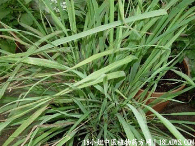

香茅(中草药名称:香茅)(科目:禾本科)

别名：大风茅、香茅草。
植物名：香茅。
生长环境：本品为多年生，簇生成大丛的草本。栽培植物，适于较热的地方。
分布：广布于热带地区。广州亦有栽培。
入药部分：根。
采集期：全年。
自采地点：家种。
性味：性温，味甘辛，气芳香。
功能：祛风消肿。
主治、用量和用法：1、头风晕：干用1至2两，鸡肉适量，清水炖，加酒冲服；2、预防产后风：干用1至2两，鸡肉适量，清水炖，冲酒服，临产前服一、二次。
附录：香茅草，全草煎水外洗，治风肿、跌打瘀肿。
验方1：（治跌打瘀肿方）香茅草、黑老虎、鸡骨香、大还魂、小还魂、大小罗伞，各5钱、清水四碗，煎成一碗服。
（方解）本方香茅草祛风消肿、黑老虎去瘀生新，鸡骨香行气止痛、大小罗伞通血脉止痛、大小还魂散瘀消肿，适用于外伤瘀肿疾患。
（方歌）跌打瘀肿香茅草，大小还魂黑虎保，大小罗伞鸡骨香，祛风行气止痛好。
验方2：（治牛病搅肠痧方）香茅草10两、白术8两、两味炒锅，清水煎服。
参考资料：《广东常用草药验方集解》预防产后风经验方：香茅头1至2两，独用一味，以水二碗煎成一碗温服，如炖鸡更佳，可于产前预服二次，有祛风保产作用。
（方解）产后气血虚弱，百脉需要养晦，偶有发生产后风昏现象。香茅头辛温而不散，气香二不窜，能温腹肿诸风寒，预服数次，能使血脉旺盛，故能预防产后风晕。
（方歌）预防产后气血虚，百脉失濡风掉晕，独用香茅头煎服，加鸡同炖力超群。